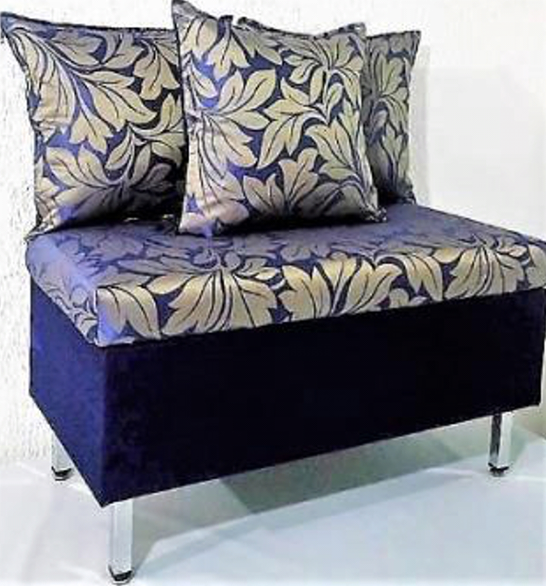
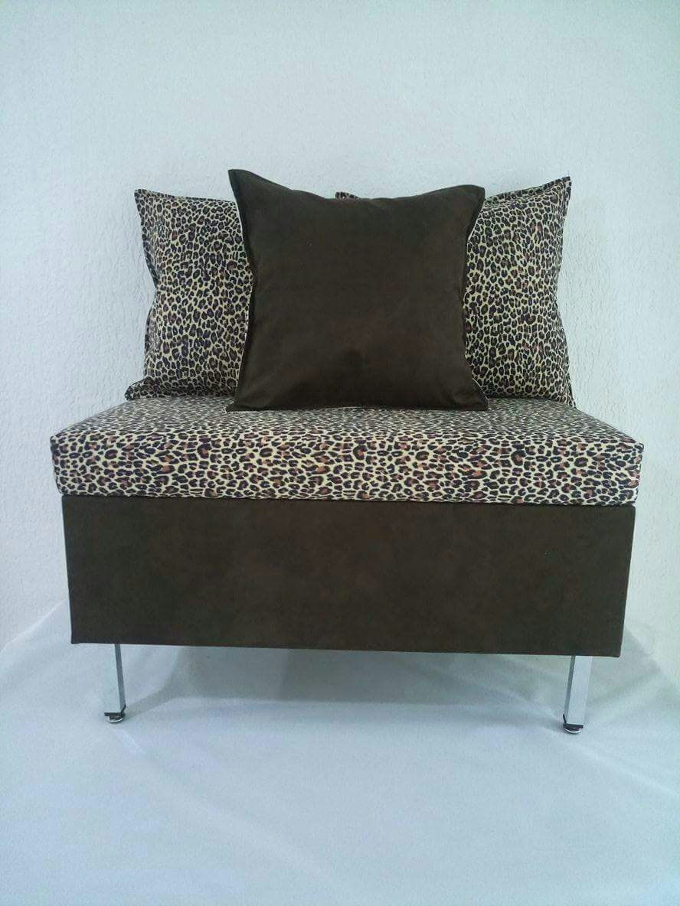
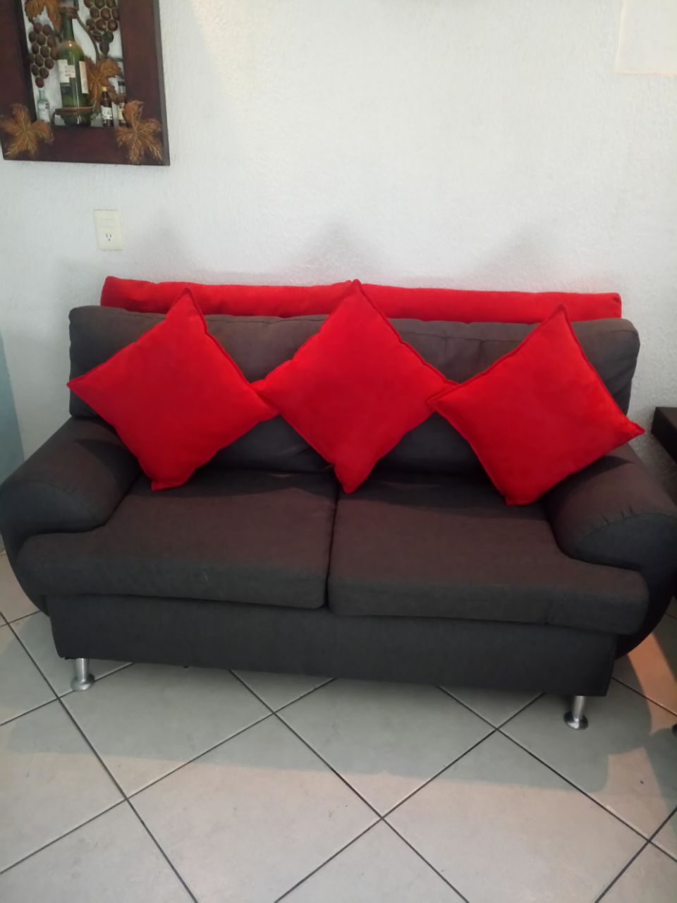

¿QUE HACEMOS?
En TABURARTE Somos expertos fabricantes de Taburetes artísticos, tenemos la mision de crear para ti muebles únicos y adaptables a tu hogar u oficina combinando lo artesanal con materiales de la más alta calidad logrando así un diseño único e innovador.
En TABURARTE, podrás comprar de forma rápida y segura tus productos preferidos como taburetes, cojines, sillas, cajoneras, Estaciones de planchado, bases de cama, zapateras, cavas, mesas y lámparas. Creamos muebles totalmente personalizados, logrando una experiencia inolvidable.
TABURARTE comprometido con tiempos y zonas, cuenta con entrega inmediata a toda la Republica Mexicana.
CONTACTO TABURARTE
Eje 5 sur #89 Col. Paseos de Churubusco México, D.F.
(a espaldas del Centro Nacional de las Artes).
Tel. 5630-0228. email: taburartecdmx@gmail.com

Taburete celeste plata
Medidas frente 80, fondo 42, altura 42 (cm)
Materiales: cuerpo madera de pino,
tapizado en tela suede azul petroleo,
asiento con espuma de alta densidad 8 cm
tela raso hojas plata, patas cromadas.

Taburete Ocelote
Medidas frente 80, fondo 42, altura 42 (cm)
Materiales: cuerpo madera de pino,
tapizado en tela suede con estampado Ocelote,
asiento con espuma de alta densidad 6 cm
tela raso, patas cromadas con regatón nivelador.

Sillón Brownie
Medidas frente 180, fondo 60, altura 70 (cm)
Materiales: cuerpo madera de caoba,
tapizado en tela suede color moka,
cojines baja densidad color cereza de 48x48cm
tambien disponible en sofa cama.